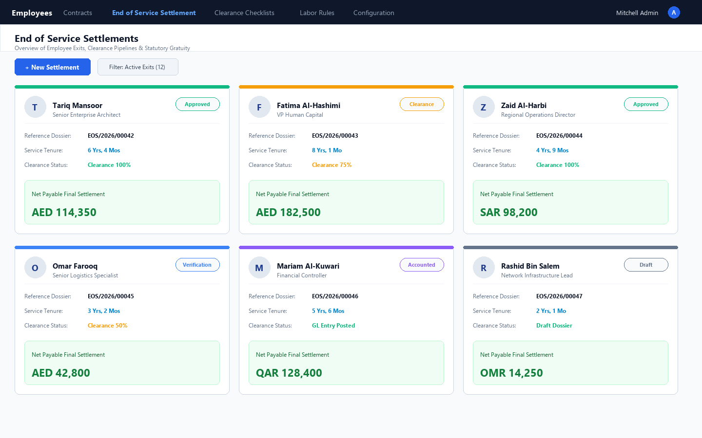
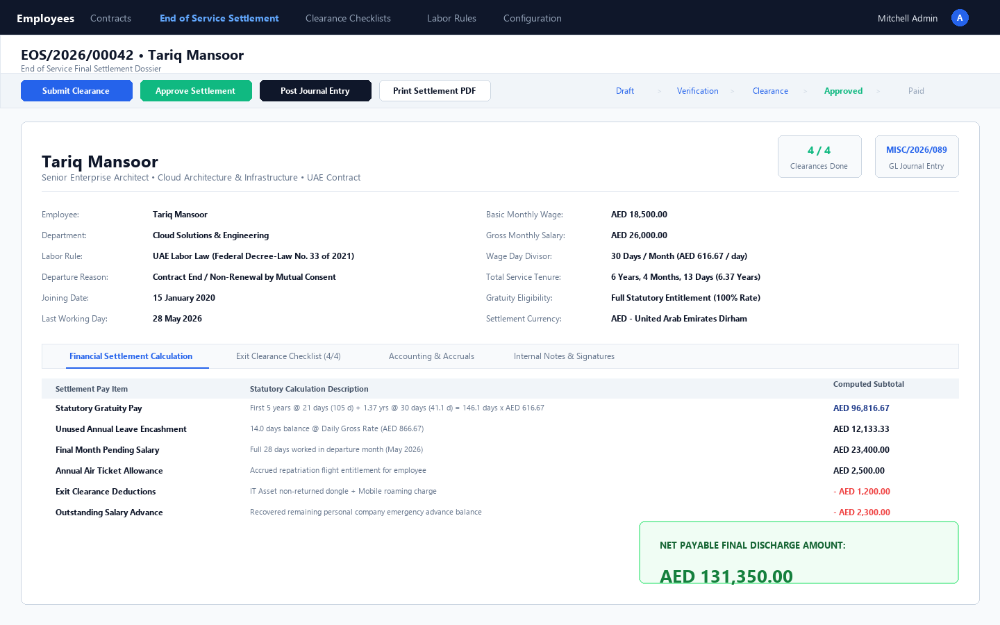
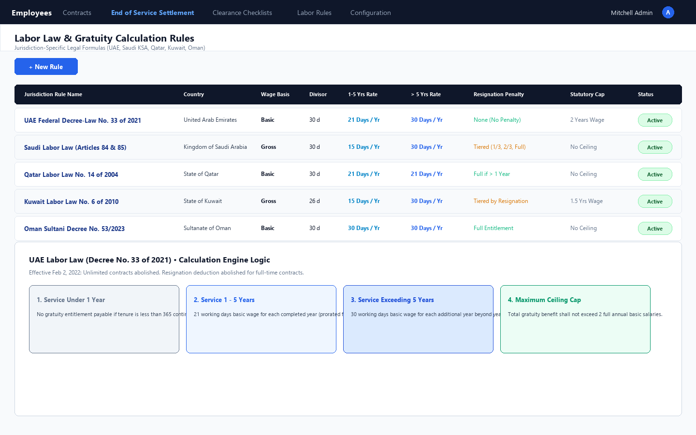
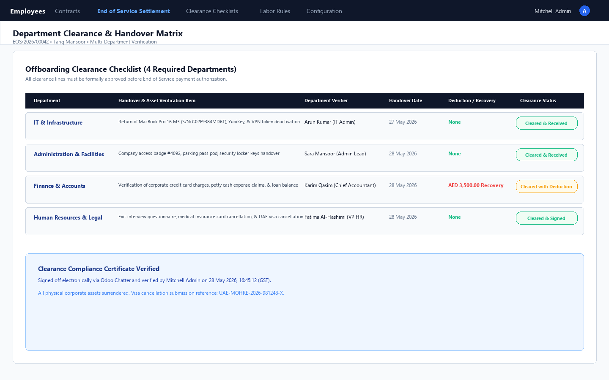
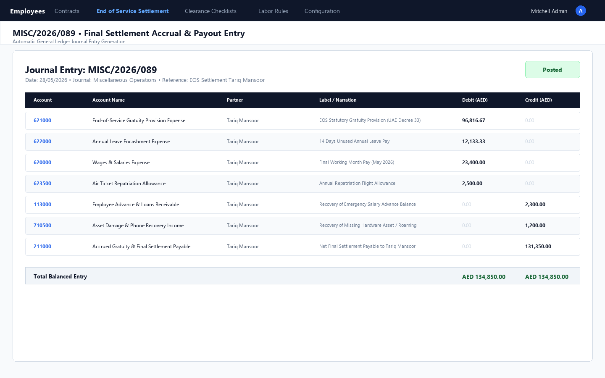
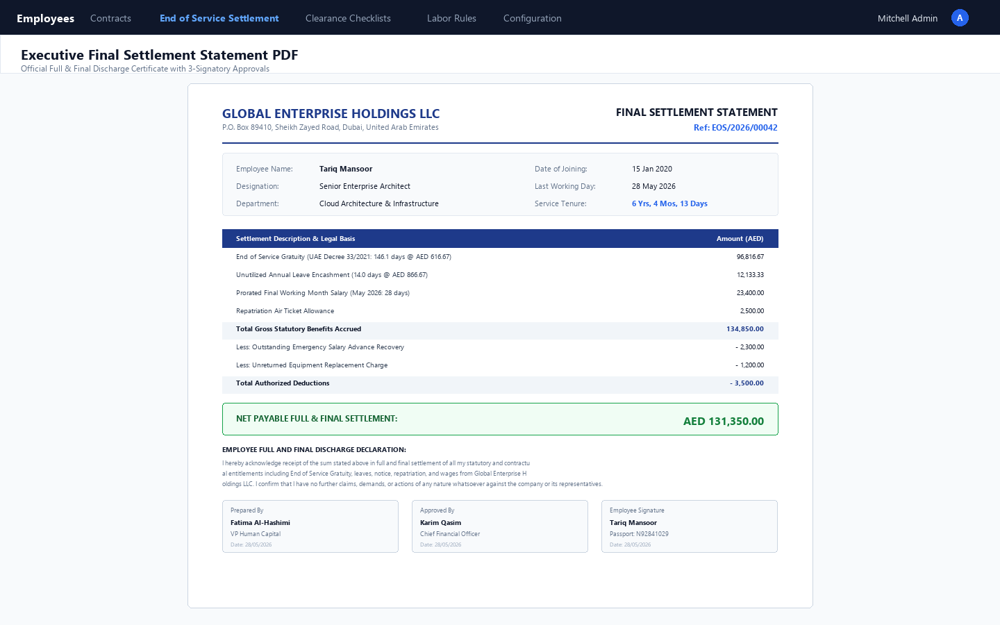

Compliant with UAE Federal Decree-Law No. 33 of 2021, Saudi Labor Law Articles 84 & 85, and GCC Labor Standards with Multi-Department Exit Clearance & GL Accounting Integration.
Calculating End of Service (EOS) benefits across the Middle East (UAE, Saudi Arabia, Qatar, Kuwait, Oman, Bahrain) is notoriously complex. Labor laws frequently update—such as the UAE Federal Decree-Law No. 33 of 2021 which standardized limited contracts and repealed resignation reductions, or Saudi Articles 84/85 which mandate tiered resignation scales. Manual spreadsheets lead to legal disputes, overpayments, unrecovered company assets, and missing accounting accruals. End of Service Gratuity & Final Settlement Calculator gives HR and Finance leaders an enterprise-grade engine that handles legal formulas, offboarding clearances, and GL postings directly in Odoo Community.
A complete offboarding ecosystem covering statutory calculations, inter-departmental checklists, and accounting
Pre-loaded rules for UAE Decree 33/2021 (21 days for first 5 yrs, 30 days thereafter, capped at 2 yrs salary) and Saudi Labor Law Articles 84 & 85 (15 days for first 5 yrs, 30 days thereafter, with 1/3, 2/3, and full resignation tiers).
Computes exact service tenure down to the calendar day. Automatically excludes unpaid leaves or unauthorized absences to ensure statutory legal precision.
Consolidates Statutory Gratuity, Unused Annual Leave Encashment, Final Working Month Salary, Repatriation Flight Allowance, Notice Pay, and Advance/Asset recovery deductions into a single dossier.
Multi-department offboarding checklist covering IT (laptops, tokens, access), HR (visa cancellation, medical insurance), Finance (loans, corporate cards), and Admin (security keys, access badges).
Automatically balances and generates general ledger journal entries (debiting Gratuity & Leave Salary Expense, crediting Advance Recovery, and crediting Accrued Gratuity Payable).
Official printable settlement certificate with employee service history, financial statement, statutory legal discharge declaration, and 3 signatory authorization blocks.
Engineered with clean UX principles for HR Specialists, Finance Managers, and Operations Directors
Visual pipeline organized by lifecycle stage: Draft, Clearance, Approved, Paid, and Cancelled. Displays key metrics including employee department, departure reason, and net payable amounts at a glance.

Full-featured settlement record displaying employee contract service tenure (Years, Months, Days), statutory calculation breakdown, leave salary encashment, pending wages, ticket allowance, deductions, and smart buttons linking clearances and GL entries.

Pre-configured legal formulas for UAE Federal Decree No. 33 of 2021, Saudi Arabia Labor Law (Articles 84 & 85), Qatar, Kuwait, and Oman. Supports custom wage basis, month divisors (30 vs 26 days), and tiered resignation penalties.

Offboarding sign-off checklist across IT (hardware & VPN), HR (residency visa cancellation), Finance (loans & credit cards), and Administration. Features deduction linking for unreturned equipment.

Seamless integration with Odoo Accounting. Posts balanced debit lines (EOS Expense, Leave Expense, Final Wages) and credit lines (Advance Recovery, Asset Damages, and Net Accrued Gratuity Payable) with 1 click.

Formal printable A4 statement for departing personnel with legal discharge text, corporate header, service period details, financial breakdown, and 3 signature blocks for Prepared By, Approved By, and Employee Acknowledgement.

Follow this end-to-end testing workflow to evaluate all core features right after installation
Navigate to Employees > End of Service > Labor Law Rules. Notice the pre-configured rules: UAE Federal Decree-Law No. 33 of 2021 and Saudi Labor Law (Articles 84 & 85). Open either rule to review statutory wage calculation formulas, month day divisors (30 days), and maximum caps.
Navigate to Employees > End of Service > Settlements > New (or open any employee form and click the End of Service smart button). Select an employee (e.g. Mitchell Admin or an employee with an active contract).
Specify the employee's Joining Date (e.g. 5 years ago) and Last Working Day (e.g. today). Select the Departure Reason (e.g. Contract Non-Renewal / Expiry or Resignation) and pick the applicable Labor Rule.
Click Recalculate Gratuity. Observe the service tenure computation (exact years, months, days). Review the computed Statutory Gratuity Amount, enter unutilized annual leave days (e.g. 14 days) to compute leave encashment, and add flight allowance or loan deductions. Verify that Net Settlement Amount updates accurately.
Click Submit for Clearance. The settlement moves to the Clearance stage, and 4 departmental items are generated: IT & Laptop Handover, Admin Key & Card Handover, Finance Loan Recovery, and HR Visa Cancellation. Mark each item as Cleared. Notice the smart button updating to 4 / 4 Clearances Done!
Once clearances are completed, click Approve Settlement. Next, click Generate Accounting Entry. The system generates a draft balanced General Ledger Journal Entry (account.move) with debit lines for EOS Gratuity & Leave Salary Expense, and credit lines for Deductions & Accrued Gratuity Payable. Click the Journal Entry smart button to review and post it.
Click Print > Final Settlement Statement (or click the Print Settlement Statement button in the header). Open the generated PDF: observe the formatted executive corporate header, employee contract service record, statutory breakdown table, final discharge text, and 3-signatory approval lines!
| EOS & Gratuity Capability | Standard Odoo Community | HR Gratuity Settlement Hub |
|---|---|---|
| Statutory UAE Decree 33/2021 Rules | ✗ Not supported | ✓ 21/30 days formula & 2-yr wage ceiling |
| Saudi Articles 84 & 85 Resignation Scales | ✗ Not supported | ✓ Tiered 1/3, 2/3, and 100% resignation rates |
| Exact Tenure Math (Years / Months / Days) | ✗ Manual calculation | ✓ Prorated to exact calendar days |
| Unused Annual Leave Salary Encashment | ✗ Manual computation | ✓ Automated daily wage rate multiplier |
| Multi-Department Exit Clearance Matrix | ✗ External paper checklists | ✓ 4-Department checklist with sign-offs |
| Automated General Ledger Journal Entries | ✗ Manual journal entries | ✓ 1-Click GL debit/credit balancing |
| Printable Final Settlement PDF with Discharge | ✗ No standard PDF report | ✓ Executive 3-signatory legal discharge statement |
Our team of certified Odoo technical architects provides free installation guidance, version upgrades, and tailored HR & payroll integrations for UAE, Saudi KSA, Qatar, Oman, and Kuwait enterprises.